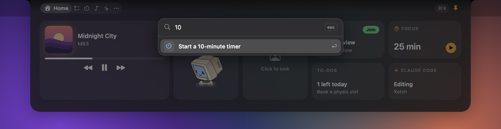

An assistant at the top of the screen, not in another tab
Press ⌘⇧Space from any app and ask. Xotch works with Claude, GPT, Gemini, Groq and OpenRouter, or a model on your own Mac through Ollama or LM Studio.
It can look at your calendar, to-dos, timer, notes and what's playing, then add a to-do, start a focus session, write a note or put an event on your calendar.
Nothing changes until you click Allow. Each action shows as a card first, and most can be undone from the card afterwards.
Shortcuts skip the model entirely: /todo, /timer 25m, /focus, /note, /play.
Replies are formatted for reading: headings, lists, tables and highlighted code. Make the chat bigger when an answer needs room.
Planning an afternoon: two lookups, one change made, two waiting for Allow.
Answers you can use straight away
Code comes highlighted with a copy button. Attach a screenshot of what's on screen and ask about it. Chats are kept on your Mac, and the AI only sees what you choose to share.
Talk instead of typing
Hold Fn. Speak. Let go.
The words appear where you're typing, in any app, tidied up. Speech becomes text on your Mac with Whistle from Cactus Compute: a 17 MB model that turns five seconds of speech into text in about 30 ms.
Double-tap Fn to keep listening hands-free. Esc cancels.
"Um"s and repeats dropped, capitals fixed. Optionally, your AI polishes the grammar.
Teach it names and jargon. English, German, French, Spanish, Italian, Dutch and Polish, or detect.
Your voice is never saved or sent. Password fields are refused, and your clipboard is put back afterwards.
Open, and closed: while you talk, the ears beside the camera show it's listening.
Run your day
The things you reach for fifty times a day
Home puts the essentials on one screen. Everything else is a tab away, and each module can be switched off or reordered.
To-dosToday and someday. Unfinished to-dos carry over instead of disappearing.
CalendarThe next seven days, one-click Join for Zoom, Meet and Teams, and reminders.
Focus and timersFocus sessions with breaks, countdowns, and a stopwatch with laps.
Now PlayingMusic, Spotify or any app playing audio, with bars that follow the real sound.
CaptureScreenshots and screen recordings, landing on a shelf ready to drag.
Claude CodeWhat it's doing right now, beside the camera, and today's usage from the logs on your Mac.
ClipboardEverything you've copied, searchable and pinnable. Passwords are skipped.
ShelfDrop files on the notch to keep them handy. Drag them out, or AirDrop them.
StatsProcessor, memory, battery and network at a glance.
While it's closed, the ears take turns
Anything live shows beside the camera. When several things are live, they take turns, and Volume and brightness get their own HUD.
MusicArtwork and a wave that follows the real sound.
Claude CodeWorking, needs you, or done.
Focus timerA ring fills as the session runs down.
Screen recordingThe time so far. Click to stop.
Make it yours
A little character, and a look that's yours
A page mascot sits in the ear and on Home. It turns to watch your pointer, breathes while it waits, and reacts when you click it. Twelve characters, from a fox to a CRT.
In the earCompany while you work. It costs no measurable processor time.

One shortcut for everythingPress ⌘K and type: 10 min starts a timer, shot takes a screenshot, anything else becomes a to-do.
A mirror, when you want one
A tile on Home shows you through the camera, flipped like a mirror, for a look before a call. It starts only when you click it, and stops when you click again or close the notch, so the camera light never comes on just because the notch opened.
macOS's own dark look
The open notch uses the same dark material as Control Center, and the closed notch stays black to match the camera. Themes of Xotch's own are coming later.
Privacy and performance
Clear about what leaves your Mac, and light on it
No account, no analytics, no telemetry. Everything else is your choice, and it's written down.
Stays on your Mac
Dictation. Your voice is turned into text on the Mac and never saved or sent.
Local AI. With Ollama or LM Studio, chats never leave the machine.
Your data. To-dos, notes, clipboard history, chats and captures live in one folder.
API keys are kept in the Keychain.
Leaves, only when you choose
Cloud AI. Your messages, the context you picked, any screenshot you attach, and what the AI looks up to answer go to the provider you chose. Clipboard and notes go only after you click Allow.
Optional polish. If you turn it on, dictated text goes to your AI to fix the grammar.
One download. The 17 MB speech model, from Hugging Face, once.
Permissions are asked for when a feature needs them: Accessibility for the Fn key and HUDs, Microphone for dictation, Calendar, Screen Recording.
~0.3%CPU with the notch closed and three live activities taking turns
29 MBmemory with the notch closed, on two displays
~30 msto transcribe five seconds of speech, on the Mac
0%CPU from the speech engine while idle; it quits after two quiet minutes
Measured with top, sample and footprint on an M5 Pro, and written up in the project's performance notes.
Compared honestly
Xotch and seven other notch apps, free and paid
Every notch app does music and HUDs. They differ on AI, voice, price and polish. Here's where each one stands, Xotch's gaps included.
Checked 6 October 2026 against each app's own site or repository. These are the vendors' claims, not our tests. "Not stated" means we couldn't confirm it either way. Apps change fast, so check before you buy.
YesPartlyNo? Not stated
Scroll sideways on small screens. Sources are listed below the table.
Feature
XotchBeta
NotchyFree
NotchNookPaid
AlcovePaid
Boring NotchOpen source
AtollOpen source
CrestPaid
DroppyPaid
Price and platform
Price
Free during beta
Free, donations
$25 once, or a subscription
$14.99
Free
Free
$24.99 once (Pro), or $2.99/mo
$9.99 once
Open source
No
No
No
No
GPL-3.0
GPL-3.0
No
? Not stated
Signed and notarised by Apple
Not yet
? Not stated
? Not stated
? Not stated
NoHomebrew handles it
? Not stated
Yes
Yes
Macs without a notch
YesDrawn on every display
YesFloating pill
Yes
? Not stated
Yes
NoNotched MacBook only
YesPill
YesFloating shelf
Oldest macOS
14
13
14.6
15
14
14
14
14
AI and voice
AI chat in the notch
YesCloud or local models
No
No
No
No
No
No
No
AI that changes your to-dos, timer, notes and calendar
YesAfter you click Allow
No
No
No
No
No
No
No
Voice to text
YesHold Fn, types into any app, on the Mac
No
No
No
No
No
PartlyMeeting notes, in the Minutes app
PartlyTranscribes recordings, on the Mac
Coding-agent status (Claude Code)
Yes
Yes
No
No
No
NoA fork adds it
Yes
YesAgents add-on
Approve agent requests from the notch
NoShows "Needs you"
Yes
No
No
No
No
Yes
? Not stated
Your day
To-dos or reminders
Yes
Yes
? Not stated
? Not stated
NoOn the roadmap
No
Yes
No
Calendar
YesOne-click Join
Yes
Yes
? Not stated
Yes
Yes
YesOne-click Join
? Not stated
Focus timer
Yes
Yes
? Not stated
? Not stated
? Not stated
Yes
? Not stated
? Not stated
Music controls
Yes
Yes
Yes
Yes
Yes
Yes
Yes
Yes
Synced lyrics
No
Yes
No
? Not stated
No
No
Yes
YesAdd-on
File shelf
Yes
Yes
Yes
? Not stated
Yes
? Not stated
Yes
Yes
Clipboard history
Yes
Yes
Yes
? Not stated
No
Yes
Yes
Yes
Screenshots and recording
Yes
Yes
? Not stated
? Not stated
No
No
YesTake app
Yes
Volume and brightness HUDs
Yes
Yes
Yes
Yes
Yes
Yes
Yes
Yes
Camera mirror
YesOn Home, after a click
? Not stated
Yes
? Not stated
NoOn the roadmap
? Not stated
? Not stated
? Not stated
A companion character
YesPage mascot
No
No
No
No
No
No
No
Pros and cons, app by app
Which one fits depends on what you want the notch to be.
Xotch
Free during beta
Best for people who want an assistant in the notch that does things, and dictation that stays on the Mac.
Pros
The only one with an AI chat, cloud or local
AI actions, each approved first
Push-to-talk dictation into any app, on the Mac
Live Claude Code status and usage
Light: about 0.3% CPU closed, 29 MB
Cons
Private beta, not yet notarised
Permissions reset with each beta build
Dictation needs Apple silicon and macOS 26
No lyrics, launcher or agent approvals
No macOS 13
Notchy
Free, donations
Best for the most features for nothing.
Pros
Free, with 70-plus features
Synced lyrics, Face Unlock, OCR, launcher
Claude Code activity and approvals
Runs on macOS 13, and as a pill without a notch
Cons
No AI chat or voice typing
Closed source
So much in one app can feel busy
NotchNook
$25 once, or subscription
Best for a polished, established widget dock.
Pros
Long-running and widely reviewed
Media, calendar, file tray, AirDrop, mirror
Lots of visual customisation, and a camera mirror
Cons
The priciest one-time licence here
No AI or voice features
Recent reviews report slow support
Needs macOS 14.6
Alcove
$14.99
Best for the most iPhone-like Dynamic Island.
Pros
Known for fluid, polished animation
Live Activities, notifications, HUDs
Lock Screen widgets
Cons
Needs macOS 15
Narrower: little for to-dos or files
No AI or voice features
The Boring Notch
Free, GPL-3.0
Best for a free, open-source music and shelf notch.
Pros
Free and open source, about 11k stars
Music with a visualiser, shelf with AirDrop
Full HUD replacement
Cons
Not signed: a security bypass to open
No AI; to-dos only on the roadmap
No clipboard or capture
Atoll
Free, GPL-3.0
Best for a free notch with system stats.
Pros
Free and open source
Media, timers, clipboard, colour picker
CPU, GPU, memory and network at a glance
Cons
Needs a MacBook with a notch
No AI or voice features
No to-dos
Crest
$24.99 Pro, or $2.99/mo
Best for developers who want agent approvals and GitHub in the notch.
Pros
Approves Claude Code, Codex and Copilot CLI requests
Transcribes recordings rather than typing as you talk
No AI chat, to-dos or calendar
Sources, read on 6 October 2026. Third-party "best notch apps" lists are often published by one of the apps they rank, so we used each app's own page wherever we could.
Yes. On a Mac or display without one, Xotch draws a notch at the top of the screen, and it can run on every display at once.
Do I need an AI subscription?
No. Bring a key for Claude, OpenAI, Gemini, Groq or OpenRouter, or run a free model on your own Mac with Ollama or LM Studio. The rest of Xotch, dictation included, works without any AI.
Can the AI do things without asking?
It can look things up for you, like your agenda or today's to-dos. Anything that changes something, or shares your clipboard or notes, waits on a card until you click Allow, and most changes can be undone.
Which Macs can dictate?
Dictation needs Apple silicon and macOS 26, because that's where the Whistle engine runs. Everything else works on macOS 14 or later, on Apple silicon or Intel.
Why does macOS warn me when I open it?
Beta builds aren't signed with a Developer ID yet, so macOS asks you to allow Xotch once in Privacy & Security, and each new beta build asks for its permissions again. Signing and notarisation come before the public release.
Will it slow my Mac down?
With the notch closed it uses about 0.3% of the processor and 29 MB of memory. The speech engine runs only while you dictate and quits after two quiet minutes.
Private beta
Try it before it ships
Xotch is in private beta while it's signed and notarised. Testers get the build, the changelog, and a direct line for anything that breaks.
Unzip the download and drag Xotch to Applications.
Open it. If macOS says it can't check the app, choose Open Anyway in System Settings › Privacy & Security.
Move the pointer to the notch. Xotch lives in the menu bar and has no Dock icon.
Needs macOS 14 Sonoma or later, on Apple silicon or Intel. Dictation needs Apple silicon and macOS 26; screen recording needs macOS 15; Liquid Glass needs macOS 26.